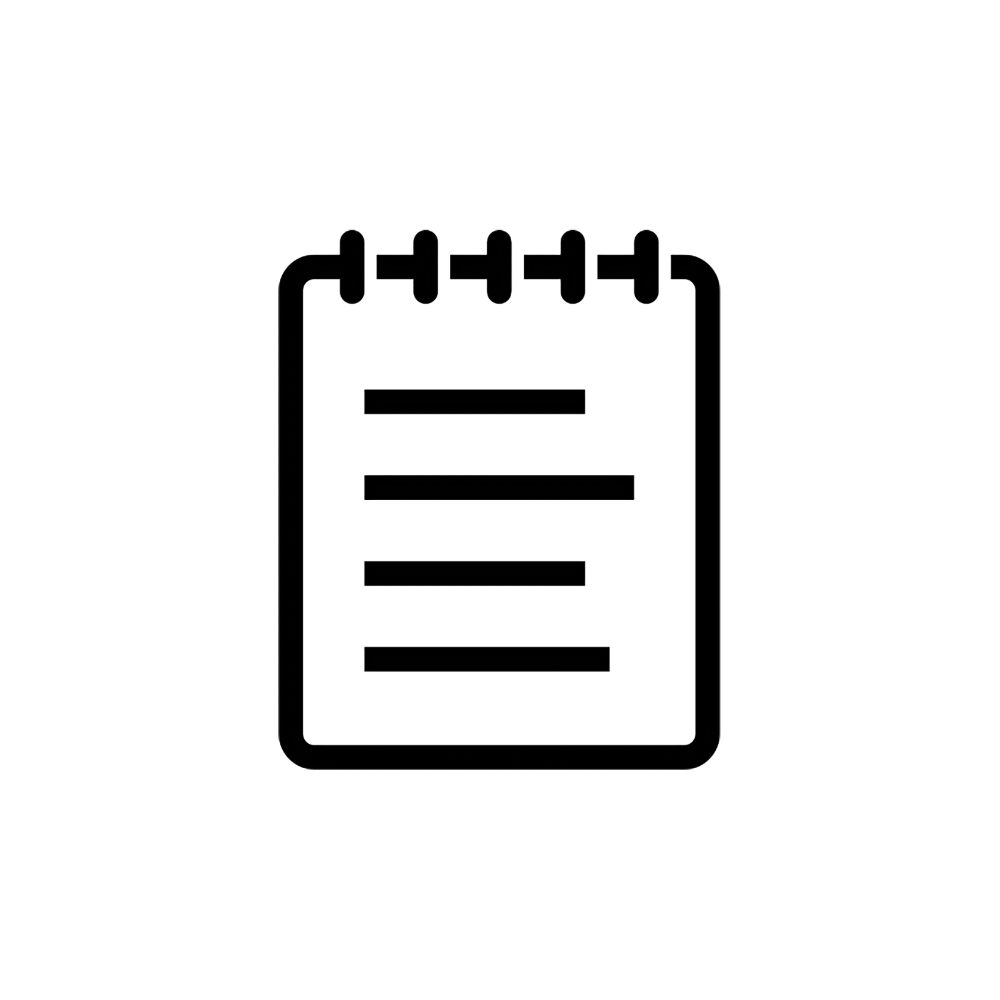
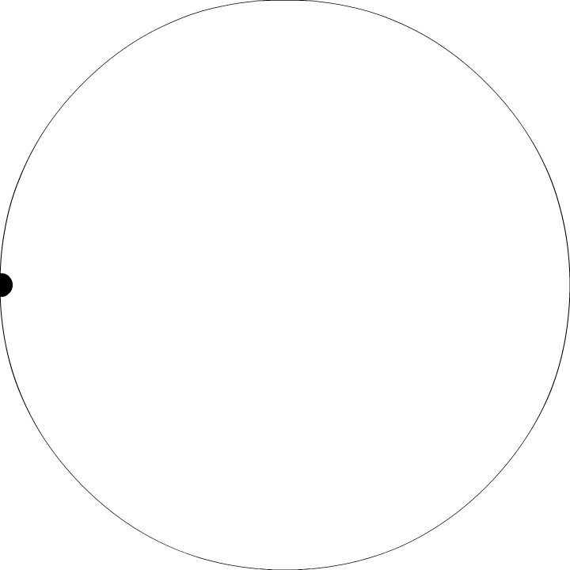

Cette petite application multiplateforme à pour utilisation d'illuminer un objet par l'utilisation d'un module bluetooth et de led. Sa premiere utilisation fut faite sur un coktail lors d'un concours

NotePad
Cette application bureautique permet de gerer des notes que l'on peut organiser à souhait, on on peut y inclure photo, dessin ou graphique

Logo
Chaque application necessite des design plus ou moins recherchés. Aussi je travaille regulierement sur des logo / animation ou idée graphique afin d'agrementer les projets effectués
Étudiant en troisième année de licence Sciences et Technologies, spécialité orienté objet. Dynamique, assidu et conbattif, aime apprendre au contact de professionnels dans un environnement passionnant.
Nom
Deliens
Prenom
Samuel
Date
13/12/2001
Mail
Samuel.deliens@gmail.com
Adresse
02100, St Quentin
Rue
5rue des freres Desains
Expérience Professionnelle
Noolitic
Développement Web et embarqué
Euratechnologies - Lille 01/2021 - 1 mois
Création application pour contrôler objet connecté à distance en utilisant l'API Flutter
Reflexion entre les contraintes de l'objet et les demandes des clients
2021
PAJ
Bénévolat
Barentin 2019 - 1 an
Création art divers (peinture sur pot, toile) pour une exposition
Renovation partie extérieure de la base nautique de Jumiège
2019
Multisys
Maintenance objets électroniques
Barentin 11/2016 - 1 semaine
Aménagement réseau et réseau électrique dans un bâtiment public
Developpé en Flutter, elle permet aussi d'etre utilisée sur divers plateforme (windows, osX, android, IOS). En choisissant le module bluetooth adequat lors de l'utilisation de l'application, l'on peut alors effectué l'allumage des led reliés au module. On peut donc se servir de cette application afin d'illuminer ce que l'on souhaite. Sa premiere utilisation fut faite afin d'illuminer un coktail lors de son arrivé sur la table du client, le tous lors du concours Arcoroc en 2021.
NotePad
Développé en Java, cette application permet de gerer l'edition et l'organisation de notes, chacunes d'entre elles peuvent ainsi contenir différents objets. Evidement des objets textes que l'on peut organiser, editer et customiser au choix, mais aussi des objets photos, graphiques ou dessin. L'ensemble des ces elements sont des blocs agencable au choix les uns les autres sous forme de widget. Enfin ces notes peuvent etre triés dans des dossiers que l'on peut aussi créer et editer au choix.
Design Creation
Voici quelques créations design que j'ai pu effectués: